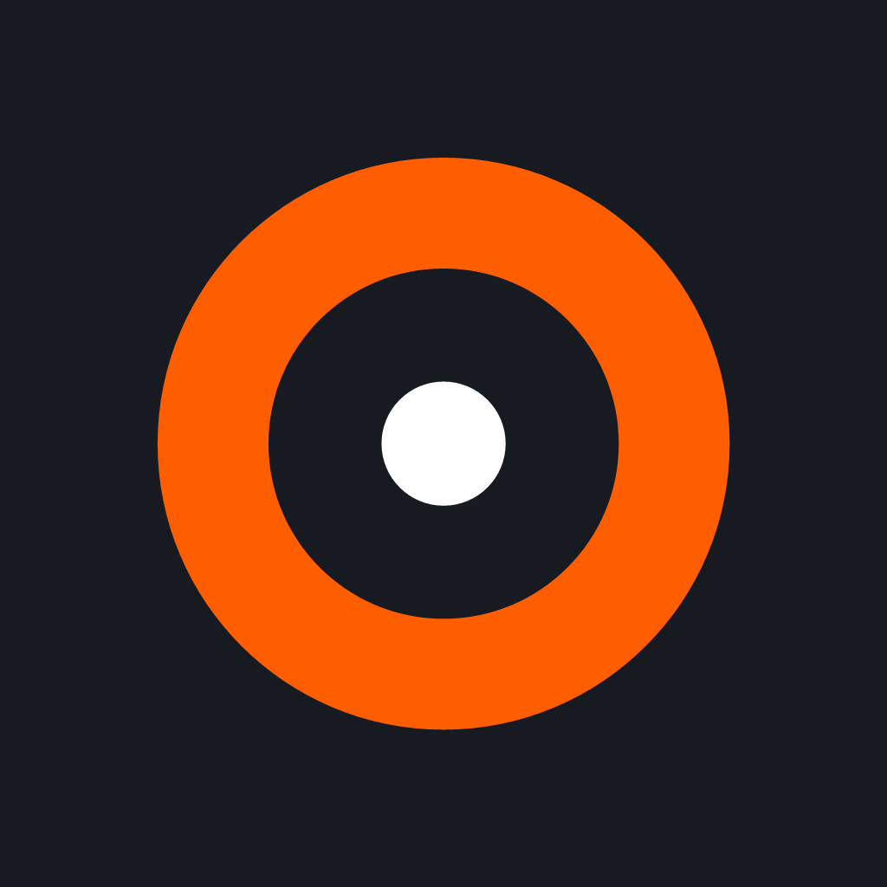

01 — FUNDACIÓN
Que se vea desde lejos.
Faro Digital hace páginas web bilingües para iglesias y escuelas. Todo lo visual existe para que el mensaje de nuestros clientes se vea claro y llegue lejos.
Misión
Sitios claros que la gente usa
Bilingües, rápidos y fáciles de mantener.
Promesa
Respuesta en 1–2 días
Una persona real, por WhatsApp o en persona.
Prueba
5.0 ★★★★★
Las 5 estrellas se muestran una sola vez, en la portada.
Valores
01
Claridad
Una idea por pantalla.
02
Cercanía
De tú, con nombres y lugares reales.
03
Constancia
Como un faro: siempre encendido.
02 — LOGO
FARO, con la luz en la O.
Un logotipo de letras propias, anchas y firmes. La O es un anillo naranja neón: la luz del faro. Sin adornos, para que funcione igual en un letrero, una camiseta o un ícono de 16 píxeles.
- 1Letras propias. F, A y R dibujadas a mano con el mismo grosor. No es una fuente: nadie más la tiene.
- 2La A sin travesaño. Su forma recuerda la torre de un faro.
- 3La O de luz. Anillo en naranja neón. Es la única parte de color.
- 4El símbolo. La O sola, con un punto de luz al centro, para íconos y redes.
Versiones
Sobre neón · todo grafito
 Símbolo
SímboloEspacio libre y tamaño mínimo
Símbolo: 16 px · 5 mm impresoNo hagas
03 — COLOR
Neutros tranquilos. Un neón que se nota.
Grafito y blancos hacen el trabajo. El naranja neón es la luz: botones principales, la O del logo y bloques de color a todo lo ancho.
--neonNeón
HEX#FF5E00
RGB255 94 0
UsoAcción, la O, bloques
--grafitoGrafito
HEX#171A20
RGB23 26 32
UsoTítulos, fondos oscuros
--blancoBlanco
HEX#FFFFFF
RGB255 255 255
UsoFondo principal
Apoyo
--nieblaNiebla
HEX#F4F4F4
--textoTexto
HEX#393C41
--grisGris
HEX#5C5E62
--neon-txtNeón texto
HEX#C24600
Proporción
BLANCO 50%
GRAFITO 25%
NIEBLA
NEÓN 13%
Contraste (WCAG 2.2)
| Combinación | Ejemplo | Contraste | Texto normal |
|---|---|---|---|
| Grafito sobre blanco | Cotizar | 17.4 : 1 | AAA |
| Grafito sobre niebla | Cotizar | 15.8 : 1 | AAA |
| Grafito sobre neón | Cotizar | 5.7 : 1 | AA |
| Neón sobre grafito | Cotizar | 5.7 : 1 | AA |
| Neón texto sobre blanco | Cotizar | 5.0 : 1 | AA |
| Blanco sobre neón | Cotizar | 3.1 : 1 | No usar |
04 — TIPOGRAFÍA
Figtree, una sola familia.
Limpia como la de Tesla, amable como la de Starbucks. Gratis en Google Fonts. Pesos 400 a 800; títulos en 600–700 con espaciado un poco cerrado.
| Display | Que se vea desde lejos | Figtree 600 · 60 · −2.5% |
| Título de sección | Tres formas de empezar | Figtree 600 · 44–52 · −2.5% |
| Título de bloque | Sitio completo | Figtree 700 · 34–42 · −2% |
| Etiqueta | Iglesias y ministerios | Figtree 700 · 13 · +14% · mayúsculas |
| Texto | Páginas web bilingües, claras y fáciles de mantener. | Figtree 400 · 17–18 · 1.55 |
| Botón | Cotización gratis | Figtree 600 · 14–15 |
05 — COMPONENTES
Todo responde al tocarlo.
Botones rectos de 4 px (Tesla) para acciones principales y píldoras con borde (Starbucks) dentro de los bloques de color. Todo sube un poco y cambia al pasar el mouse.
Botones principales · 4 px
Sobre foto o fondo oscuro
Píldora sobre neón
Píldora sobre claro
Cotizar★★★★★5.0
06 — FOTOGRAFÍA
Gente real, luz real.
Fotos a pantalla completa de personas reales en iglesias y salones de clase, más faros con su luz. Usamos fotos libres de Unsplash y damos crédito en el pie. Nunca imágenes hechas con IA ni capturas de clientes sin permiso.
Iglesias Escuelas
Escuelas Faro
Faro07 — VOZ Y TONO
Cercana, clara, de tú.
Primero lo que la persona gana, después cómo se hace. Mismo tono en español y en inglés. Datos honestos y pocos: decir algo una vez basta.
Así sí
“Que te encuentren. Que te llamen.”
Así no
“Soluciones digitales innovadoras de última generación.”
08 — APLICACIONES
La marca, en la vida real.
Julio C. Chinea
Fundador · Founder
(786) 805-7734 · WhatsApp
chinea@farodigitalfl.com
farodigitalfl.com · Fort Myers, FL
chinea@farodigitalfl.com
farodigitalfl.com · Fort Myers, FL

Faro DigitalBusiness accountJulio C. Chinea
Fundador, Faro Digital
(786) 805-7734 · farodigitalfl.com

Fundador, Faro Digital
(786) 805-7734 · farodigitalfl.com
09 — DESCARGAS
Todo en un lugar.
 SímboloSVG
SímboloSVG
 Perfil WhatsAppPNG · 1024 px
Perfil WhatsAppPNG · 1024 px
/* Faro Digital · tokens v4 · assets/faro.css */ --grafito: #171A20; --texto: #393C41; --gris: #5C5E62; --niebla: #F4F4F4; --blanco: #FFFFFF; --neon: #FF5E00; --neon-txt: #C24600; --f: "Figtree", system-ui, sans-serif; --r-btn: 4px; --r-card: 12px; --r-pill: 999px;